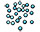
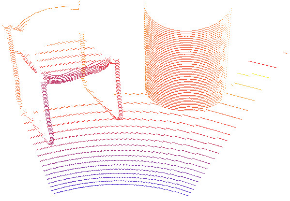

|
Point clouds A point cloud is an instance of type pointCloud, which derives from type sceneObject. It acts as an OC tree based container of points:  [Point cloud] Point clouds are collidable, measurable and detectable objects. This means that point clouds: Refer also to sceneObject.collidable, sceneObject.measurable and sceneObject.detectable. Point clouds can be added to the scene with [Add > Point cloud], and edited via the point cloud dialog. Refer also to sim.scene:createObject and pointCloud-related methods and properties. The point cloud calculations (i.e. collision, distance and proximity sensor calculations) available in CoppeliaSim are also available as stand-alone routines via the Coppelia geometric routines. See also sceneObject:checkCollision, collection:checkCollision, sceneObject:checkDistance, collection:checkDistance and proximitySensor:checkSensor. |